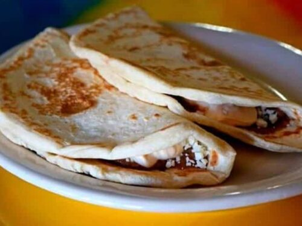

Baleadas

Descripción
La deliciosa y popular Baleada es uno de los platos típicos más tradicionales y representativos de la comida hondureña. Este alimento es originario de la costa norte del país y se elabora a base de una tortilla de harina de trigo rellena de frijoles, queso rallado y mantequilla; con el tiempo, las presentaciones del platillo han ido integrando más ingredientes, que nos llevan a muchas versiones del tradicional platillo.
Ingredientes
- 1 Libra de Harina
- 1/4 de taza de manteca
- 1 cucharadita de sal
- 1 cucharadita de soda
- 1 taza de agua
- 1 pizca de azucar(opcional)
- cantidad necesaria de frijoles
- queso rallado al gusto
- mantequilla crema al gusto
- cantidad necesaria de huevo revuelto
- aguacate al gusto
Preparación
- Pesar y medir todos los ingredientes. Hacer una pila con la harina y la soda. Dentro de la pila agregar todos los ingredientes y amasar, que esté bien suave y lisa. Dividir en unidades de 2 onzas cada una, bolearlas y dejar reposar por 20 minutos cubriendolas con un plástico
- Formar las tortillas estirando la masa y colocarlas de inmediato en un comal o sartén caliente
- Mientras se cocinan las tortillas de harina, calentar los frijoles refritos en un sartén aparte
- En otro sartén colocar un poco de margarina, verter los huevos, agregar sal al gusto y revolver por un par segundos hasta que empiece a tener consistencia.
- Una vez hecha la tortilla agregar los frijoles, el queso, la mantequilla, el huevo y el aguacate y a disfrutar de una deliciosa baleada con todo.